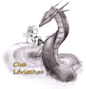

Forums galactiques > Assemblée Galactique : diplomatie officielle > De la Haine
Pages : 1
| Vladimir Harkonnen Respect diplomatique : 2306  18/05 ETU 10:29  | Score : 17 Détails Commandantes, commandants,
Vous avez sûrement déjà tous ressenti ce sentiment. La Haine. Détester quelqu'un au point que seule sa mort pourrait satisfaire votre dégoût et votre mépris à son égard. Au point que le voir souffrir vous remplit de joie. Au point que vous faîtes tout pour détruire sa vie. Au point que détruire la vie de ses proches serait une satisfaction. Celui qui n'est que Haine est-il heureux ? Certes non. Il souffre même plus. Toute son énergie passe dans son désir de vengeance ou de destruction. Il fait pitié. Détester. Aimer. Les deux opposés. Le Ying et le Yang. Le mâle et la femelle. Haïr et Aimer ne seraient-ils pas simplement deux mots qui se complètent à merveille ? Celui qui haït ne peut pas aimer. Celui qui aime ne hait point. Le Pardon est la clef. J'ai haït. Ce n'est pas parce que je suis respecté que je n'ai pas de défauts. De faiblesses. Pourquoi ? Parce que la Haine déclenche la Haine. Celui qui haït se fait haïre en retour. "Aimez vos ennemis, ne serait-ce que pour leur porter sur les nerfs." disait humoristiquement un sage de l'Ancien Monde. Il faut passer au-delà de cette Haine. La surmonter. L'Amour détruit la Haine. Je dois passer pour un mystique... Je ne le suis pas. Cela fait un moment que je pense à prendre ma retraite, mais dirigé par la Haine trop souvent, je suis resté détruire la Haine par la Haine, tout en apportant l'Amour à ceux qui en demandait. J'ai eu tort. Il faut apporter l'Amour, même contre la Haine. Vous devez tous connaître le mythe de la boite de Pandore, femme trop curieuse à qui l'on avait confiée la boîte renfermant tous les maux de la Terre avec interdiction de l'ouvrir. Elle l'ouvrit et voyant les maux sortir, elle referma la boîte. Tous étaient sortis, sauf un. A l'intérieur était resté l'Espoir. Espérance, je t'aime. Pour conclure, un texte prophétique de l'Ancien Monde disait ceci : "La bête que tu as vue était, mais elle n'est plus. Elle va monter de l'abîme et s'en aller à la perdition. Et les habitants de la terre, dont le nom n'est pas écrit, depuis la fondation du monde, dans le livre de vie, s'étonneront en voyant la bête, car elle était, n'est plus, mais reviendra." Quoique l'on fasse, Cronos sera là, à dispenser sa Haine. Ayons pitié de lui, il souffre bien plus que nous. | ||
| Général_Louis Respect diplomatique : 1323  18/05 ETU 11:37 | Score : 4 Détails "Vous avez des paroles sage Vladimir, mais croyez-vous que Cronos est supportable?
Regardez cet espionnage:" Le commandant pigeon possède 563 planètes. Vos mécanoïdes ont pu avec certitude déterminer que les planètes suivantes lui appartiennent : teheh, sethhsse, reqzreg, etjxdrj, qrhesr, rzhqesherh, rheqrh, rzherh, planète 89 N.E., rherh, eqrherh, reqzheh, qerheqrh, erheqrh, reherh, erheqh, qrehqeh, reqhehr, rhehqe, rhqeh, X-006-02, Spatio Port, Banque d\\\'Utopia, COnstitution, Maison Equilibre, Maison des Pieux, Isorthi, Màlaga, Andorra, Maison des Libertés, Maison des Justes, Maison des Richesses, yhyjgfvc,j, Erain, Saint Drokarak, Saint Alex Rider, Sainte Kryllenne, Sainte Mystèrax, Sainte Flay, MERCI PARISII leVieu, Saint Roi liche, Saint Kumano, Dalaran I, Dalaran II, Dalaran III, Dalaran IV, Dalaran V, Dalaran VI, Dalaran VII, Dalaran VIII, Dalaran IX, Dalaran X, Dalaran XI, Dalaran XIII, Dalaran XIV, Dalaran XV, Dalaran XVI, Dalaran XVII, Dalaran XVIII, Dalaran XIX, Dalaran XX, Oggok I, Oggok II, Oggok III, Oggok IV, tombe, la faucheuse, OS, cape, Oggok VI, Oggok VII, Oggok VIII, Oggok X, Oggok XI, Oggok XII, Oggok XIII, Oggok XIV, la mort, hexagonal, Oggok XV, [TdP]Soleil vert, cancre valley 12, colonie 24, colonie 22, Pledgor, Cradle of life, Fifth Garden, Red Horizon, Mizu, Hime Castle, Essaile encor, Pas de Chance, pigeon farcie, planète 1063, planète 1064, conan, planète 1073, Decembre Rouge, planète 1075, Octobre Rouge, Deeeeeeeeee, Tagada, colonie 21, colonie 20, planète 1203, planète 1204, cleveland, philadelphie, portland, new orlean, planète 1210, planète 1211, planète 1213, planète 1214, planète 1215, planète 1216, colonie 18, orlando, colonie 17, DesertAride I, Kardes I, Roturdo I, Freezland I, zrzrzgezq, dfheh, erheqreqqz, zqrhqzh, egtzeq, zregzqg, rgezqhgqez, ezgtzegtz, zrgzregsz, rtshrsth, 4, zegzregszre, Francisca, Salvador, encomendera, encomendero, j,nfrgyn, ki, planète ezrzqre, planèteztztzqe'gt, colonie 3, colonie 4, colonie 8, colonie 9, colonie 10, colonie 13, colonie 7, Arnaden Môr, Wraith_5/4, Wraith_5/1, Wraith_5/2, Wraith_5/3, jsrjgt, rtjrstjh, etheh, heqreh, teshesr, ert(hesh(, re(herh, ehtheqsth, erhesrh, hesth, erhe, rehesh, rehqerh, eqrzhqeh, erqherq, hqererq, thesrh, qerher, herqh, rheh, X-083-01, C, D, E, F, G, X-083-02, I, J, X-083-03, Lena, 3.83 Désertique, M, 2.83 Egémonie, 1.83 Capital, strike, frite, Santander, la clippers, LA lakers, toronto, phoenix, dallas, milwauke, indiana, strhrsth, Alliancy, fatchdeu11, tgrdkuft, fatchedeu45, fatchdeu30, nfdxndx, fatchedeu3, fatchedeu24, fatchedeu6, fatchedeu2, fatchedeu4, Iohniis, planète 1754, planète 1755, rohan, La légion ardente, Kzwixopolis, etheshwdes, stejgwdnjde, Garaneth, colonie-Cotoche, Sapientia, Terre promise, Amarok, Kubuntu, Ubuntu, Nautilus, Laellyo, Sep-Acatzinco, Faederia, Sep-Quecholac, Sep-Malmo, Brasilia, dona bella, santa marina, porto vechio, valadolid, peons, nouvelles indes, Cumata, Géomède, Shiva, Horion, Thomas Moor, Gomara, neua monda, El Salvador, ange, nouveau monde, las casato, sierra palada, Ixion, Secrito, recrudessence, derbia, dree, propulition, virulento, [SOCA] 98-1, [SOCA] 98-2, Arsouille 19, Arsouille 18, Arsouille 17, Arsouille 16, Arsouille 15, Arsouille 14, et(hresht, Heress\\\\\\\'lu, explica, xinio, ffff, 6666, 5555, Centre d\'espionnage, Camp d’entraînement, Niaaa, terre ingrate, Viva Zappata, KissCool, Razorback6, razorback7, El Dorado, razorback8, Razorback4, razorback 2, Razorback5, Razorback1, Cailloux, wahouuuuu, Les Survivants, Azure, helgedad, 175, bellovaquess, plapla, Dyonis prime, Empire de Jade, Jade la tueuse, Dyonis IV, Dyonisis VII, Palais de Jade, Tilée empire de jade, onotor, krashyyyk, fumiera, Dyonis VI, Dyonis V, Dyonis, Deirdre, Atlantiss, Menzobis, hume, Imaginez, Eve, amor, Appollon, dos, ENF 1 4-3-2-6, Jade aime tuée, expiration, Les verts de jade, caillasse, caillasse (bis), Gamma Arcos, CGT de jade, Champ de BuZz, Deris Kharlan, Syndicat jadeen, NarutoWorld, Institution de jade, Magics jade, Rocher, Goblin, Yolth, Grumly, Artisant, le chaos, Naogeddon 1, Naogeddon 2, Naogeddon 3, Naogeddon 4, Naogeddon 5, Naogeddon 6, Naogeddon 7, Naogeddon 8, Naogeddon 9, Naogeddon 10, Naogeddon 11, Naogeddon 12, Naogeddon 13, Naogeddon 14, Naogeddon 15, Naogeddon 16, Sidden, Darktrouper, Kejim, Navarre, Gukta I, Gukta III, Gukta IV, Gukta V, Gukta VI, Gukta VII, Gukta II, Gukta VIII, Gukta IX, Gukta X, Gukta XI, Gukta XII, Gukta XIII, Gukta XIV, Gukta XV, rtjrxdtj, planète 6906, planète 6908, planète 6909, planète 6910, moche, ge, regqez, erherh, ezzqegtf, t\\\"3ZET, QGZRERZ, zergtds, zeg'teq, sjnsdtrhj, rgerqgs, regegfdxw, ergdezg, zrtgewsqt, ereqzgt, qegtzsegt, zset\'gz, zrgzr, zegtezqgt, furil, xanio, Rourou World, reg, bahhh, bouhhh, Taratata, Ztrakztimgrätz, Mundolsheim, Oberhausbergen, questionnement, sufri, purion, dania, kenia, quira, vuril, kuri, huri, ProtosseVII, futiliti, nuliti, fyty, murioi, gruiti, planète 8121, planète 8122, planète 8124, Vilma, Arturia, Etcaetera, Zona, Alta, Sigma, Stasia, Tawa, sulli frezze, sauté de vondermark, xeniax, brochette de pigeon, planète 8137, planète 8138, planète 8139, sether au bain marie, Asinos, Asounis, Asouna, Varteta, Vourti, Tirtu, Serti, Dertu, Daeva "Trouvez-vous normal que ce commandant est 563 planètes? Même si il a la Haine au fond de lui, il devrait apprendre à la gérer, et non a tous nous prendre pour des MOINS que RIEN. Je dis que ce commandant est à éradiquer, car il n'est pas que Haineux, il sait mentir, comploter, assassiner, et j'en passe. Donc croyez-vous normal de laisser faire celà? Non! Il faut trouver un remède, et ce remède, c'est le tuer. Je vous laisse méditer sur ce que j'ai dit." Le Général_Louis s'assit et écouta les discutions. | ||
| imperatrice Jade Respect diplomatique : 469  18/05 ETU 11:46 | Score : 8 Détails Sentiment de profonde antipathie à l'égard de quelqu'un, conduisant parfois à souhaiter l'abaissement ou la mort de celui-ci.
Je ne connais que trop bien se sentiment mon ami,hier meme la haine a commencer a m'envhair mais j'ai reussi a la maitriser grace à de nombreux soutien merci (Ace et Anko),la haine est légitime et elle fait partie des sentiments humains. Je comprends votre lassitude mais je pense que l'heure de votre retraite n'a pas encore sonnée. Meme si beaucoup s'interroge sur vous et vos proches colaborateurs,il me semble que Espérance a besoin de vous l'homme qui a passé en premier les 1000 points de respect. Meme si Cronos regne en parti comme un tyran démoniaque,je suis persuadée que cela ne durera pas eternellement. La force c'est l'union la haine na amenée que des catastrophes en tout genre,genocides,guerres,et j'en passe. Elargissons nos pensées et alors Espérance trouvrera son équilibre. Impératrice Jade de Tilée | ||
| Sullïwan Respect diplomatique : 1097  18/05 ETU 17:29 | Score : 9 Détails Comme le feu fait s’évaporer l’eau, la haine dissipe l’amour,
Comme l’eau éteint le feu, l’amour anéanti la haine. Ne laissons pas nous âmes rongées par cette maladie de rage, qui aveugle nos jugements pour nous enfoncer dans l’erreur. La haine n’entraîne que haine, l’amour n’entraîne qu’amour, il suffit d’un sourire, contagieux, pour contaminer tout un groupe de bonheur, de joie, d’amour. Refusons le cycle éternel de la violence et de la haine, faisons le pas qui nous conduira au cycle perpétuel de la joie du partage, de l’amour d’autrui. Il ne font jamais se battre par haine, par envie de meurtre de l’adversaire, quels que soit ses actes, car les conséquences de nos gestes serait bien plus grand, en prodiguant les gouttes de cette maladie mortelle dans les cœurs qui nous écoutent. La raison du combat doit être justement l’amour de son prochain, d’une galaxie meilleure. | ||
| Gromek Respect diplomatique : 146  18/05 ETU 19:40 | Score : 8 Détails "La hain'..La seul' choz qui peut faire gagner le combat le plus desespéré..
La seul' choz qui fait qu'on peut s'entretuer sans raison. La hain',la rage,la colère...Utilisez-les de la bonn' manière..ou banissez-les.." | ||
| Eragon Ohen Respect diplomatique : 466  18/05 ETU 21:38 | Score : 11 Détails *Un dragon au écailles bleu terne sortis alors de son coin ou il été passer inaperçus. Le premier et dernier dragon bleu qui avait parlé sous l'étendard d'Eragon a l'assemblée été Eragon en personne qui avait noble allure mais celui qui se présentait n'était pas confondant malgré sa ressemblance sur certains points. Le reptile ailé semblait se mouvoir avec difficulté. Le dragon inconnu se plaça face aux autres commandants et se tourna en direction de Vladimir. Après un grondement de salutation, il pris la parole:*
-Cher commandant Harkonnen. Je comprends votre point de vue… Qu'il ai la même cible ou pas, a savoir Cronos, je vous comprends au plus haut point votre sentiment. S'en rendre compte est une chose, l'action qui en découle en est une autre. J'ai moi même connu des situations difficiles dues à cette haine qui anime souvent les êtres vivants doués de pensée… Vous semblez avoir souffert plus que de raison de cette haine… Ce sentiment créé des blessures plus difficiles encore a soigné que les blessures du corps. Elles font souffrir tout en étant invisible et furtives... Quand l'on se rend compte qu'elle nous ronge tel un brasier dévore une foret, il est trop tard pour agir rapidement et nombre d'arbres sont tuer Pour les êtres vivants, les arbres sont remplacés par le courage, la joie, l'amitié, parfois la peur ou même le fait de voir que l'on est aimer et apprécier Nombre d'autres choses sont tel les arbres mais en énumérer la liste totale serait fastidieux Quoi qu'il en soit, sachez que vous pouvez toujours fuir cette haine en nous quittant Mais en sera elle apaisée pour autant? Ou sera elle juste masquée par la pensée de l'avoir vaincue? Ou sera elle juste masquée par la pensée de l'avoir vaincue? La haine vous procure force et courage, oui Mais a quel prix? *Le dragon bleu hésita un moment puis repris:* -De plus, qu'aurait penser Eragon Ohen s'il avait jadis eu vent de votre intention? Je pense qu'il en aurait été profondément attrister… Bien sur, si vous voulez nous quitter je ne dis pas qu'il ne faut pas. Mais je pense que ce serait fort dommage. Le père dragon vous avait en haute estime jadis, avant d'être capturé… Et il vous a sans nul doute encore dans son estime… Partez le coeur tranquille ou rester avec la haine C'est peut être ce que vous pensez? Alors ôter le voile sombre de la haine de votre vue et découvrez la vérité par vous même. Observez le monde ou vous voulez vous retirer Puis observez celui ci De façon objective dans les deux cas Je ne peut juger votre lieux de retraite Mais je peut porter un jugement sur cette galaxie. Oui, certains son animés d'une haine dévastatrice… Mais si vous regardez bien, ils ne sont qu'une minorité. La différence avec ceux qui ne sont pas amplis de haine? Il savent faire parler d'eux et contaminer de haine ceux qui les entourent... Maintenant, regardez votre entourage... L'impératrice par exemple. Elle a tenté de vous soutenir elle aussi. Pensez vous que ce soit anodin? Je ne crois pas... de plus, si vous cherchez, vous trouverez nombre de pattes tendues pour vous aider. La haine les masque car elle vous crée une obsession. Si vous décidez de partir, nombre de commandants en serons profondément attrister... Restez mon ami, il y a encore tant à découvrir. *Le dragon inclina légèrement la tête en ferment les yeux face au baron, acte de respect impensable venant d'un représentant d'une race si fière, puis retourna dans l'ombre de sa démarche peinée.* | ||
| hiram Respect diplomatique : 203  18/05 ETU 23:00 | Score : 4 Détails Haïr c'est : s'attrister de.
Ce n'est pas l'amour qu'il faut rechercher, car trop souvent l'amour conduit à la haine mais c'est la joie. Réjouissez-vous Baron de conduire la galaxie d'Espérance sous de meilleurs auspices grâce au rôle que vous jouez en son sein ! Réjouissons-nous de la chance qui nous est faite de construire ensemble l'avenir d'Espérance ! Réjouissons-nous de pouvoir faire le nécessaire pour aider ceux qui sont dans la détresse ! Et alors seulement, balayée par tant de joie, la haine disparaîtra comme elle est apparu. |
Pages : 1
Forums galactiques > Assemblée Galactique : diplomatie officielle > De la Haine